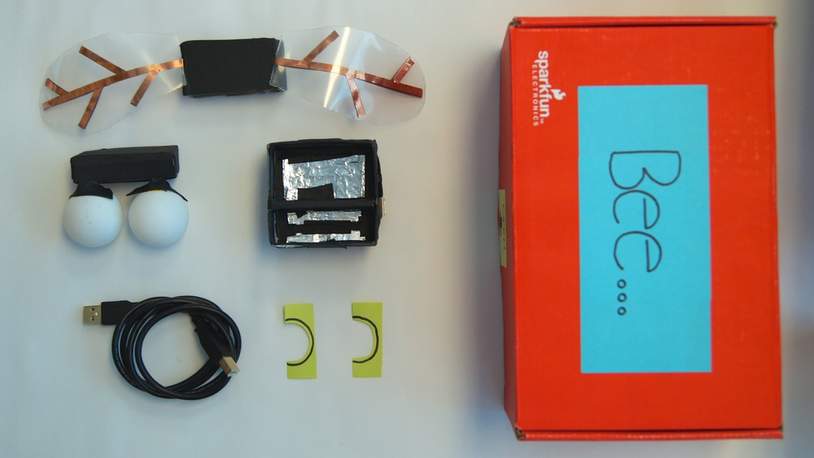
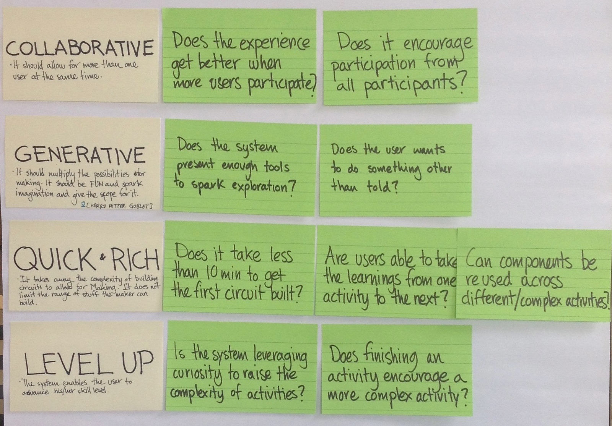

June 2014 - August 2014 @ Intel Santa Clara
“HOW MIGHT WE ENABLE NOVICE MAKERS IN GROUP ENVIRONMENTS TO START MAKING AS QUICKLY AS POSSIBLE WITH ELECTRONICS?” — Intel Labs Open Design Intern Team
RESEARCH
During the Summer of 2014 a team of interns (Juan Correa, Rucha Patwardhan, & William Felker) worked on researching how we could make Intel's Galileo more approachable to novice makers. We were a part of Intel Labs User Experience Research Group and more specifically, the Open Design Research Team. Our goal was to deliver a comprehensive research summary of the space surrounding Galileo and a final prototype of our recommended solution. Our team conducted a comprehensive research phase focusing on building a comprehensive ecosystem surrounding the Galileo to enable it to become an educational platform for individuals new to the maker space.
PROTOTYPING
We explored a variety of concepts stemming from modular self-building kits to making smarter breadboards that one could control with an app. Ultimately, we narrowed it down to two main streams of thought. One explored the value gained by reverse engineering something and the second investigated building from scratch in a 'safe' environment.
| Complex Object (Bee) | GUIDED EXPERIENCE VERSION 1 |
|---|---|
|  |  |
| This concept spawned from the idea that many kids will disassemble things as an attempt to understand how they work. To test this hypothesis we built a 'Bee' that was constructed of mini modules that can be taken apart and put back together in a different order to make a new object. For this iteration the Bee's eyes light up when you touched its wings. | Next, we explored the ideas surrounding a toolkit that would make it safe to "blow something up" as you learn about the relationships between sensors and actuators. The goal of this concept was to focus on a more guided experience and to leave the user with a kit of components which they can use to start making their first project. |
LEARNINGS
After several rounds of user testing, we chose to focus on the Guided Experience. This was predominantly due to the feedback we received on our two concepts. From here we created a set of design principles which we felt would enable a novice maker to become successful.

- Collaborative | The product should allow for more than one user at the same time.
- Generative | It should multiply the possibilities for making. It should be FUN and spark imagination.
- Quick + Rich | It takes away the complexity of building circuits to allow for making. It does not limit the range of creations the maker can build.
- Level Up | The system enables the user to advance his/her/their skill level.
| GUIDED EXPERIENCE VERSION 1 | GUIDED EXPERIENCE VERSION 2 |
|---|---|
|
|
| Next, we explored the ideas surrounding a toolkit that would make it safe to "blow something up" as you learn about the relationships between sensors and actuators. The goal of this concept was to focus on a more guided experience and to leave the user with a kit of components which they can use to start making their first project. | Next we wanted to understand how novice makers experience the relationships between sensors and actuators. We thought this could be achieved through the introduction of a working circuit which could be used as the Galileo booted up. At that point the next flap of the box would open revealing a collection of different sensors and actuators to exchange with the working circuit. We discovered that there is a preconceived affordance: when kids saw an open box, they wanted to open all of the flaps at once as opposed to following the sequence of steps that would teach them about sensors and actuators. This instinctive response disrupted the flow of the experience. |
| GUIDED EXPERIENCE VERSION 3 | GUIDED EXPERIENCE VERSION 4 |
|---|---|
| The goal of the next iteration was to solidify the proper flow to better understand the best method for introducing the relationship between hardware and software. Similar discoveries arose reflecting that we did not fully resolve the issues from version 2. This forced us to radically shift the intended flow of our box by turning the box into a mini toolbox and workstation which immediately exposed all the components. | Now that we understood that there was a greater need to focus on creating an environment which reduced complexity and encouraged play, we streamlined the box, changed our color coding systems to show the relationship between sensors and actuators, and redesigned a shield that we had been using since version 3 that allowed you to interact with Galileo through a customized mini pig tail connector. This greatly reduced the level of fear that users had about interacting with components that they had never used before and enabled a safe environment in which they could explore sensors and actuators. To achieve this, we removed the software component temporarily in the hopes of bringing it back in a 5th version. This would enable greater flexibility with the kit by being able to reprogram the Galileo itself. |
NEXT STEPS
- Software vs Hardware | In order to further develop the full potential of our final concept, we needed to expand our user testing sessions to incorporate a wider user demographic. The initial users tested tended to lean towards individuals who had an interest in pursuing some form of technology-based learning.
- Beyond the Classroom | Most of our research was conducted within learning environments that were geared towards teaching kids about technology. In order to fully understand the depth of the maker environment, we would need to test the kit in a wider variety of environments to understand how to best support the user when they do not have access to technology.
- Better Software Integration | Based on our preliminary research, our goal shifted to simplify the learning process which resulted in our team removing the Connect Anything (CAT_v2) platform from the toolkit. Looking at reintegrating CAT would enable us to better understand what it is that allows connections to be drawn between the software and hardware prototyping worlds.
CREDITS
For: Intel Labs, Open Design Research Group
Project Date: Summer 2014
Project Length: 3 months
Team: Juan Correa, Rucha Patwardhan, & Myself
Key Role: Lead Researcher & Hardware Prototyper